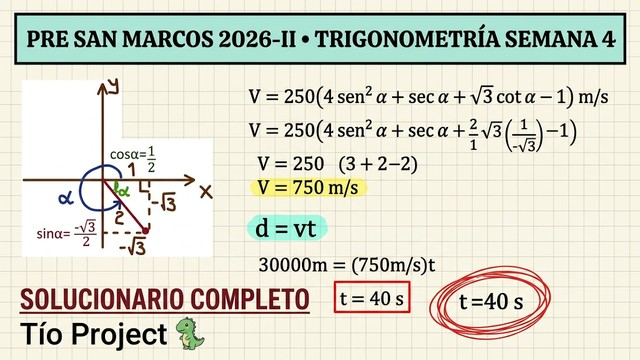
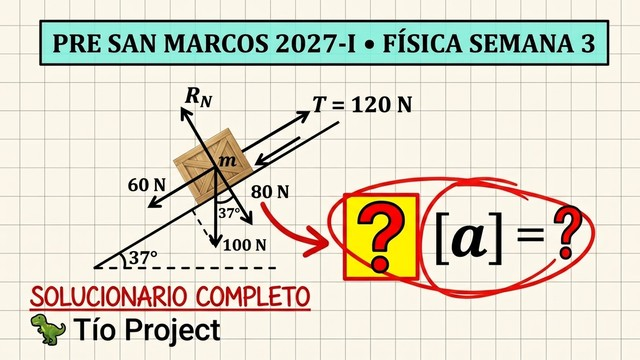
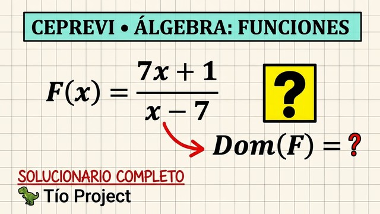
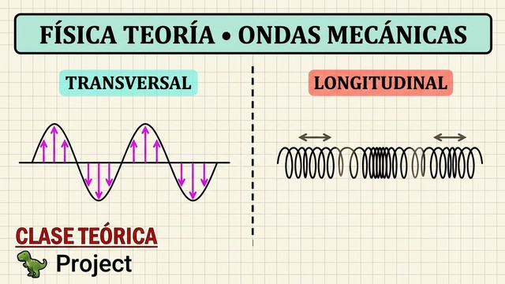
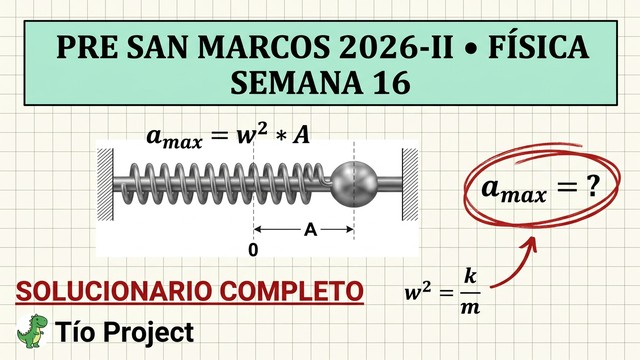

Deja de memorizar fórmulas que olvidas en el examen. Aprende a razonar ciencias.
Grupo de ayuda preuniversitario con solucionarios, resúmenes y material de apoyo gratuitos, además de clases guiadas en matemáticas y ciencias.
Acceso rápido por admisión:
LEMA OFICIAL
"El esfuerzo constante puede vencer al talento natural"
Clases y Asesorías Preuniversitarias: preparación guiada desde cero y repaso intensivo por curso.
¿Caerías en esta trampa de admisión?
Ruta de Temas por Curso
Cada curso tiene su propia ruta independiente con sus temas oficiales del temario. Selecciona un curso, explora su secuencia o toca cualquier tema de la lista/diagrama.
Tu avance guardado
0 de 0 temas dominados
Temario Oficial Completo del Curso
Solucionarios
Carpetas activas donde publico continuamente solucionarios detallados y organizados por ciclo y curso.
Solucionarios CEPREUNI 2027-I
Resoluciones paso a paso de seminarios, prácticas calificadas y exámenes de CEPREUNI con rigor técnico.
Solucionarios PRE SAN MARCOS
Solucionarios semanales y simulacros con análisis conceptual y claves argumentadas para admisión UNMSM.
Solucionarios CEPRE-VILLAREAL
Resoluciones del Libro Ceprevi y ciclos Ceprevi 2023 A / 2023 B organizadas por curso para postulantes UNFV.
Los Escritos de Project
Repositorio central organizado por rutas académicas para abrir directo en Drive sin sobrecargar tu navegador.
¿Dónde está el error?
En nuestras clases introducimos fallas sutiles a propósito para entrenar tu ojo crítico. Cada día se habilita un único caso para toda la comunidad; toca la línea donde está el error:
Dudas Resueltas de la Semana
Consultas reales enviadas por estudiantes y resueltas con criterio paso a paso.
Playlists de Clases y Solucionarios

17 videosPRESM 2026 II - Solucionarios
Ver playlist completa
11 videosSolucionarios Ciclo Intensivo 2027-I PRESM
Ver playlist completa
3 videosÁlgebra con el Tío Project
Ver playlist completa
8 videosFísica con el Tío Project
Ver playlist completa
17 videosSolucionario PRESM (Ciclo 2026-I)
Ver playlist completaClases Particulares y Grupales
Acompañamiento a medida según tu ritmo, curso o examen objetivo. Trabajamos con material previo, resolución guiada y corrección de vacíos conceptuales en modalidad virtual o presencial.
Clases Particulares Personalizadas
Sesiones individuales enfocadas exactamente en los temas o cursos independientes que necesitas dominar, preparar exámenes o destrabar ejercicios.
- Plan adaptado a tu nivel actual (base, intermedio, DECO o UNI).
- Resolución de guías, seminarios o temas puntuales del temario.
- Coordinación flexible de horarios directamente por WhatsApp.
Clases Grupales y Grupos de Estudio
Ideal si deseas formar un grupo con compañeros o sumarte a sesiones grupales reducidas para practicar problemas y discutir estrategias de examen.
- Dinámica participativa con entrenamiento anti-trampas y análisis crítico.
- Apoyo con separatas de la biblioteca y solucionarios de referencia.
- Disponible en formato virtual o presencial previa coordinación.